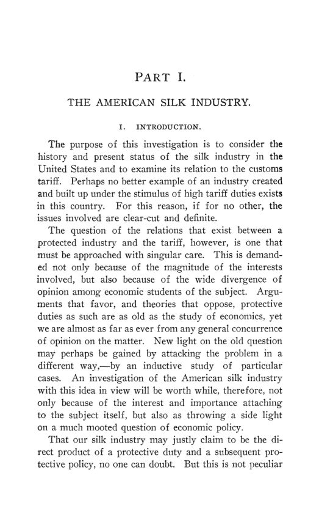

Mason, 1910: a seda americana, filha da tarifa
Leitura: 9 min
Em 1910, Frank R. Mason seguiu a indústria americana da seda de 1864 à tarifa de 1909: direitos de 60%, produção multiplicada, importações paradas e a pergunta sobre quando a proteção à indústria nascente se justifica.


Na revisão tarifária de 1889-90, a comissão tarifária da Câmara ouviu testemunhas sobre a ideia de proteger a criação de bicho-da-seda nos Estados Unidos. Um fabricante admitiu que a seda crua poderia ser produzida no país, se houvesse proteção suficiente. Perguntado quanto bastaria, respondeu:
“Ah, uns mil por cento.” (“Oh, about a thousand per cent.”)
A cena está em The American Silk Industry and the Tariff, de Frank R. Mason, A. M., ex-Austin Teaching Fellow em economia em Harvard. A tese, preparada sob supervisão de F. W. Taussig, saiu como o nº 4 do vol. 11 da terceira série do American Economic Association Quarterly, datado de dezembro de 1910. Mason a apresenta como estudo indutivo de um caso particular, para iluminar uma questão em que os economistas continuavam longe de acordo. A escolha do caso é explícita:
“uma indústria criada e erguida sob o estímulo de altos direitos tarifários” (“an industry created and built up under the stimulus of high tariff duties”)
Como uma indústria quase inexistente cresceu tanto?
Desde 1824, os direitos gerais sobre seda tinham ficado entre 24% e 30%, e só existia uma produção modesta de linhas e pequenos aviamentos. A tarifa da Guerra Civil, de 1864, elevou o direito sobre tecidos de seda a 60% ad valorem, com objetivo puramente fiscal: as linhas de costura e a seda fiada, os únicos itens fabricados no país, ficaram em 40% e 35%. Mason vê ali o começo real da indústria. As importações de seda crua quadruplicaram entre 1860 e 1870.
As importações ficaram praticamente paradas, em torno de US$ 30 milhões, desde 1873. Todo o aumento do consumo foi suprido pela produção doméstica. Em 1905, o valor produzido no país equivalia a 400% do importado.
Quanto do mercado era de fato americano?
A conta direta dava cerca de 85% do consumo, mas Mason a corrige. O valor das importações é o da fatura no exterior, a preços franceses, alemães ou japoneses, sem o imposto, o frete e a margem do importador; além disso, a subavaliação das faturas chegava, segundo se dizia, a 25% ou 50%. Somando-se 50% a 70% ao valor importado, a fatia doméstica cai para 70% a 75%, estimativa corrente no mercado.
Imposto pelo valor ou pelo peso?
A disputa tarifária sobre a seda girou em torno da forma do direito. O direito ad valorem, cobrado sobre o valor, é igual em princípio, mas convida à subavaliação das faturas. O direito específico, cobrado por libra ou por jarda, é fácil de cobrar, mas pesa mais sobre os artigos baratos e, à medida que os preços caem, sobe como proporção do valor. Por isso, explica Mason, protecionistas preferiam o específico e seus adversários, o ad valorem, que mostra com clareza o tamanho da proteção.
Em 1883, o direito geral caiu de 60% para 50%, e o de linhas e seda fiada, de 35% para 30%, sem efeito visível sobre importações ou produção. A lei de 1890 tentou um sistema específico completo; o Senado o desfez, e só veludos e pelúcias ficaram com direitos por libra. O equivalente ad valorem saltou de 45% para mais de 70%.
A lei Wilson, que virou lei sem a assinatura do presidente Cleveland em 28 de agosto de 1894, manteve 50% sobre tecidos e reduziu os direitos específicos a US$ 1,50 a libra para veludos e US$ 1,00 para pelúcias. Com a tarifa Dingley de 1897, o sistema específico passou a valer para todos os itens importantes, com escalas por peso, teor de seda e tingimento, sempre com o mínimo de 50%.
O que mudou na tarifa de 1909?
Para a revisão de 1909, conhecida como Payne-Aldrich, a Silk Association of America preparou uma tabela nova, com ampla extensão dos direitos específicos. A Câmara, diante de críticas contraditórias, manteve as alíquotas de 1897. A Comissão de Finanças do Senado, sem audiências públicas, restaurou a tabela da associação, que passou sem debate. Para Mason, o silêncio tem explicação: a seda era vista como luxo, ao lado do vinho e do fumo, e quem defendia tarifas menores guardava munição para artigos de primeira necessidade.
O padrão das mudanças é nítido. Na seda fiada, o direito equivalia a cerca de 37% ad valorem e a nova escala deveria render, em média, 50%; Mason anota que o principal fabricante desse artigo presidia o comitê que redigiu a tabela. A linha de costura passou de 30% para um direito específico estimado em 58%, embora fosse exportada. O mínimo caiu de 50% para 45%, aliviando os tecidos finos europeus, e os lenços voltaram ao ad valorem.
A conclusão de Mason sobre a tabela de 1909 é que a proteção subiu em todos os artigos que concorriam com a produção nacional, sobretudo os de qualidade média, e a revisão para baixo ficou restrita a alguns tecidos caros sem equivalente nos teares americanos. A seda artificial ganhou um parágrafo próprio e, com ele, o princípio da compensação: um direito para o fio e outro, compensatório, para os artigos feitos com ele, num total de 90% a 100%.
A proteção à indústria nascente se justificou?
A segunda metade do livro trata da americanização da indústria a partir de 1890. Máquinas automáticas de torcer o fio permitiram empregar mulheres e crianças e levaram as torcedeiras para as regiões carboníferas da Pensilvânia, onde combustível, impostos e aluguéis eram baratos. Em 1905, a Pensilvânia produziu US$ 39,3 milhões, quase o mesmo que Nova Jersey, com US$ 42,8 milhões. O custo de preparar o fio ficou abaixo do de qualquer outro país, e teares mais rápidos elevaram continuamente a produção por operário em fitas e tecidos largos.
A conclusão aplica o critério clássico: a proteção à indústria nascente só se justifica quando a indústria chega à independência. Para Mason, boa parte da seda americana já prosperaria sem tarifa. Uma minoria de artigos, sobretudo os mais trabalhosos à mão, não se adaptava às condições do país, e produzi-los era perda econômica; a doutrina estrita mandaria retirar seus direitos, embora isso ferisse interesses estabelecidos. O balanço final é favorável:
“a tarifa do passado ergueu para si, na indústria da seda, um monumento orgulhoso” (“the tariff of the past has in the silk industry reared itself a proud monument”)
Com este número, a série do American Economic Association Quarterly se encerra; a partir de 1911, ela continua como American Economic Review.
Na minha leitura
Na minha leitura, o mérito do estudo está em tratar a forma do imposto como questão econômica, e não só técnica. Mason mostra que o direito específico, defendido como remédio contra a fraude na fatura, faz a proteção crescer sem alarde à medida que os preços caem e pesa mais justamente sobre os artigos baratos. A cláusula de mínimo inverte a progressividade: o tecido fino paga 50%, o barato paga 200% ou nem entra. Uma escolha administrativa redistribui o custo da tarifa entre consumidores.
O teste que ele propõe para a indústria nascente também é o certo: não basta crescer, é preciso chegar a um ponto em que a proteção possa ser retirada. A seda passa no teste em alguns ramos, como linhas e torção, e falha em outros. A tabela de 1909, porém, elevou os direitos justamente onde a concorrência nacional já existia. A proteção temporária tem dificuldade de acabar quando os protegidos ajudam a escrever a tabela.
Glossário
- Direito ad valorem
- imposto de importação calculado como porcentagem do valor declarado da mercadoria.
- Direito específico
- imposto fixo por unidade física, como libra ou jarda, independente do preço.
- Cláusula de mínimo
- regra segundo a qual o direito nunca fica abaixo de certa porcentagem do valor.
- Seda crua
- fio desenrolado do casulo, ainda não torcido; os Estados Unidos importavam toda a que usavam.
- Torção (throwing)
- etapa que prepara o fio de seda crua para o tear, torcendo e combinando filamentos.
- Seda fiada (spun silk)
- fio feito de resíduos e fibras defeituosas, cardado e fiado como o algodão.
- Indústria nascente
- argumento de que uma indústria nova precisa de proteção temporária até poder competir sozinha.
- Direito compensatório
- parcela do imposto sobre o produto final que compensa o imposto pago sobre a matéria-prima importada.
Fontes
- [The American Silk Industry and the Tariff]: Summary (pp. v–ix). JSTOR · Internet Archive (PDF)
- [The American Silk Industry and the Tariff]: Prologue (pp. xi). JSTOR · Internet Archive (PDF)
- The American Silk Industry and the Tariff (pp. 1–182). JSTOR · Internet Archive (PDF)
- Sumário da edição no JSTOR: American Economic Association Quarterly, 3ª série, vol. 11, nº 4.
Documento em domínio público (EUA, publicado antes de 1931), via JSTOR Early Journal Content e Internet Archive. Resumo e comentário do autor deste site, sem afiliação com a American Economic Association. Encontrou um erro? Escreva: a correção é publicada no próprio texto, com data.
← Nº 109 · O Bulletin de setembro de 1910: St. Louis, Schmoller e o câmbio Nº 111 · O último Bulletin, dezembro de 1910: a passagem para a AER →